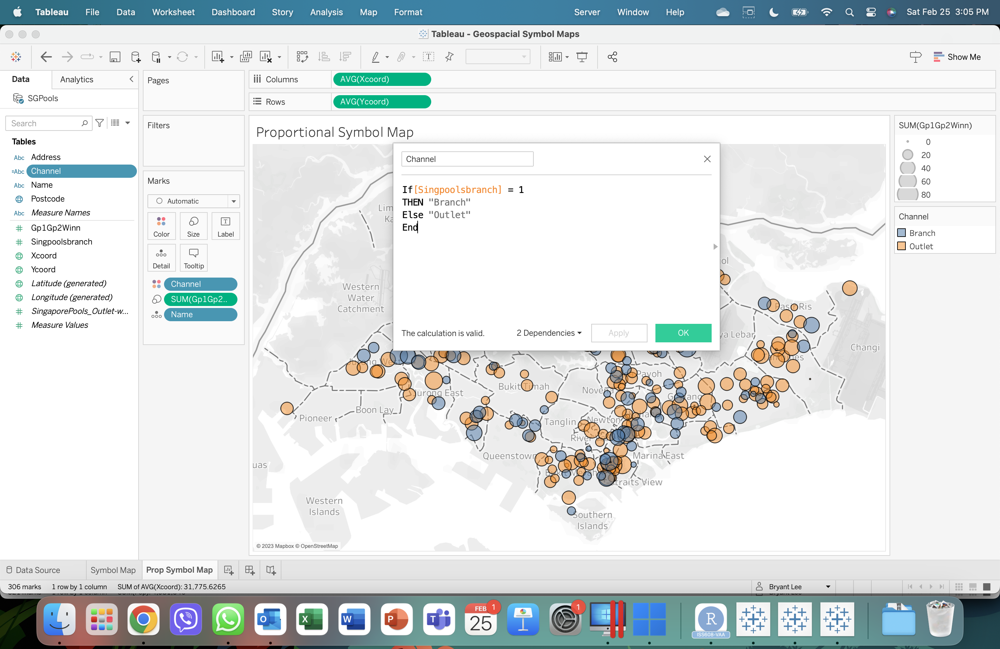
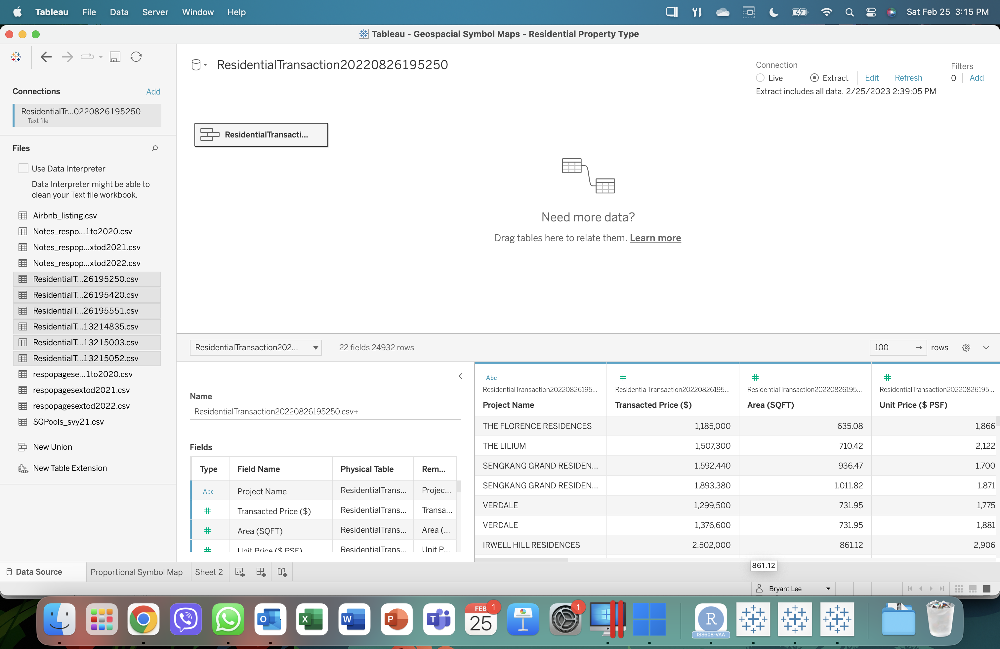
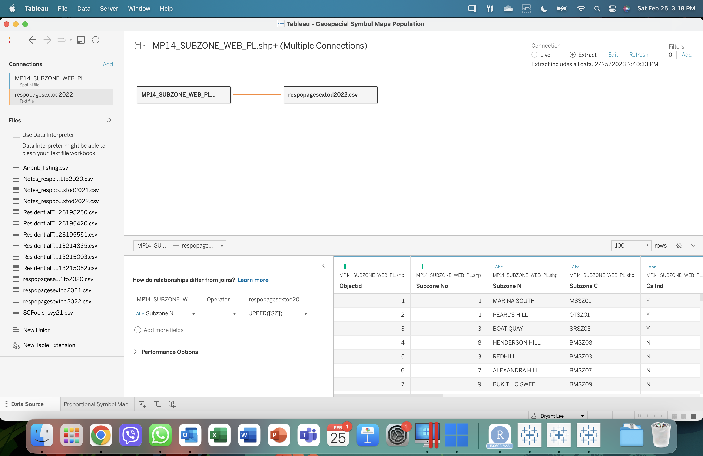

In-Class Exercise 07
Overview
This document serves as my In-class Exercise 7 requirement.
In this in-class exercise, you will gain hands-on experience on using appropriate R methods to plot analytical maps.
Tableau
Proportional Symbol Map - Branch Shop Data

To be able to render the distinct coloration, a new calculated field is to be created named “Channel” with the following equation (see image below)

Proportional Symbol Map - Residential Housing Data

Aggregreate all data found in separate sheets, highlight all datasets needed in the list and drag to the dashboards to be joined to a single dataset.

Proportional Symbol Map - Population Data

When using two distinct datasets with different format of the same column variable, ensure to convert one of the relationships to match and join both datasets.
